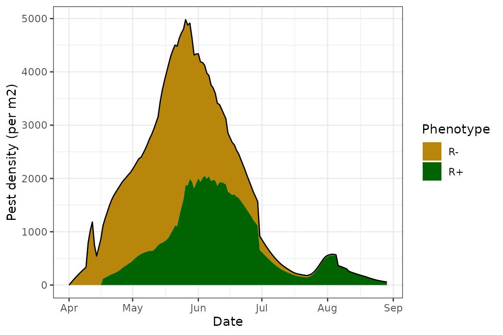
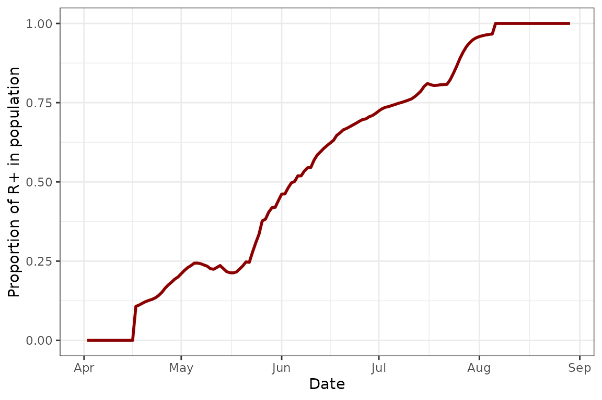
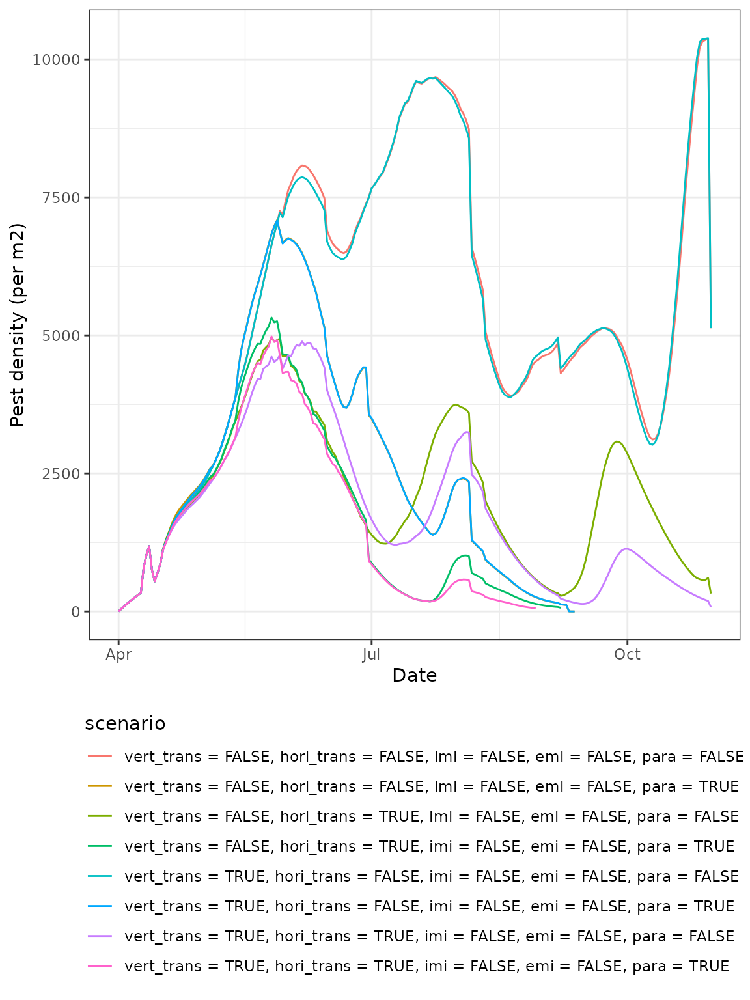
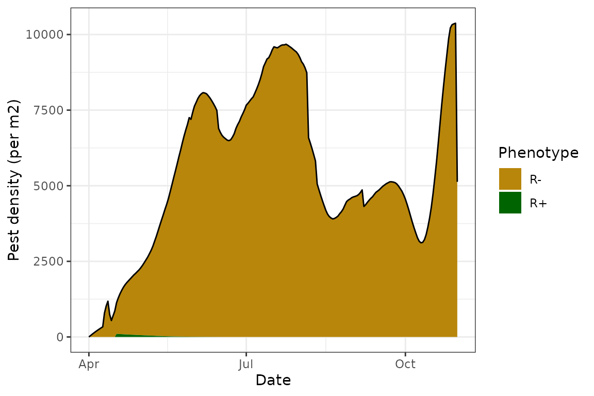
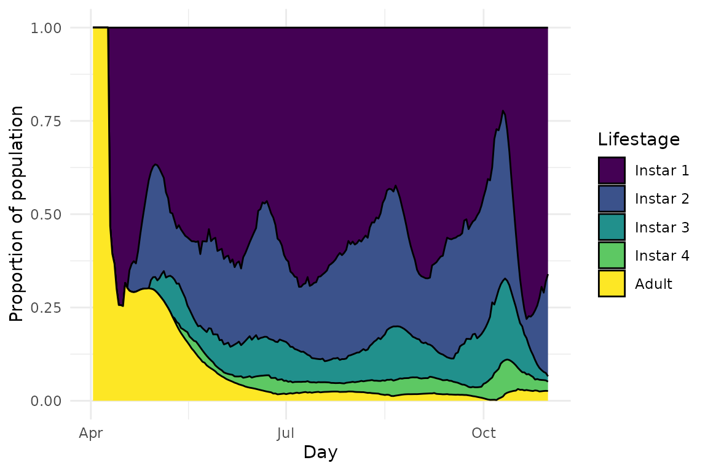

EndoSim
EndoSim.RmdThis vignette will show you how to set up and run a simulation using EndoSim. The inputs for a simulation can be quite complicated, and may require a lot of data to properly parameterise. We therefore recommended using the examples in this vignette if you are running simulations using already included pest, endosymbiont, and parasitoid species. However, feel free to experiment with different functions and parameters to explore how they affect simulation outputs and to familiarise yourself with the package and its use.
Setting up simulation inputs
The first thing we’ll need to do is set up the simulation inputs. In order to run a simulation using the EndoSim model, we will need the following objects:
1. Pest
A pest() objects includes all the functions defining the
pest’s population dynamics, including development, fecundity, mortality,
and immigration and emigration. The example pest included in the package
is the green peach aphid, Myzus persicae. We can load this pest
by running the following chunk:
data(GPA)
GPA
#> Pest of the species Myzus persicaeThe functions included for this species are based on extensive literature on the species’ biology, and so we recommend not changing these unless you wish to create a new pest object with different functional responses or parameters.
With a pest species you can easily visualise the various functional
responses by using the generic plot() function:
plot(GPA)2. Crop
A crop() object includes the half-time of endosymbiont
plant recovery, sowing, emergence and harvest dates, a function defining
how pest carrying capacity changes based on time after crop emergence,
and the crop density (in m2). The example crop included in
the package is canola. However, you may still want to adjust many of the
parameters based on the agronomical context in which you are running
your simulation.
data(Canola)
Canola
#> Canola crop sown on 2022-04-05
#> sown at a density of 35 plants per m2
#> emerging on 2022-04-10 and harvested on 2022-11-013. Endosymbiont
An endosym() object includes the endosymbiont’s fitness
cost and functions defining horizontal transmission rates. However, it
also includes the date of initial introduction to the population and the
number of infected individuals introduced - you may want to adjust these
based on the simulation you’re running. The example endosymbiont
included in the package is Rickettsiella. We can load this pest
by running the following chunk:
data(Rickettsiella)
Rickettsiella
#> Endosymbiont of the species Rickettsiella
#> with a fitness cost of 0.5
#> 1000 infected individuals introduced on 2022-04-17In this example, R+ individuals (infected with the endosymbiont) are timed to release a week following crop emergence.
4. Parasitoid
A parasitoid() objects includes all the functions
defining the parasitoid’s population dynamics and behaviour, including
development, attack rates and handling times, as well as arguments
defining which lifestages of the pest are susceptible to attack, the
date of initial introduction to the population and the number of
individuals introduced - you may want to adjust these based on the
simulation you’re running. The susceptible lifestages might also change
based on the pest you are using. The example parasitoid included in the
package is Diaeretiella rapae, which mainly attacks
2nd and 3rd instars of Myzus persicae. We
can load this parasitoid by running the following chunk:
data(DR)
DR
#> Parasitoid of the species Diaeretiella rapae
#> attacking pests of the following lifestages: 2 3
#> 300 individuals introduced on 2022-04-20In this example, introduction of parasitoids is timed to occur three days after the release of R+ aphids.
5. conds
A sim_conds() object defines the length of the
simulation and environmental conditions (rainfall, min, max and mean
temperature) in each daily timestep. An example object, for Aroonda
during the growing season of 2022, is attached as an example:
data(Aroonda)
Aroonda@sim_length
#> [1] 214
Aroonda@start_date
#> [1] "2022-04-01"Note the start date - in this example we begin the simulation prior to crop sowing and emergence.
The key slot in the sim_conds() object is
env, a dataframe defining the environmental conditions in
each day of the simulations:
# glimpse the environmnetal conditions dataframe
head(Aroonda@env)
#> t Min.Temp Max.Temp Temperature Precipitation
#> 1 1 16.2 26.9 21.55 0.1
#> 2 2 13.3 29.1 21.20 0.0
#> 3 3 15.8 31.7 23.75 0.0
#> 4 4 16.5 23.1 19.80 7.6
#> 5 5 14.5 20.2 17.35 4.4
#> 6 6 15.3 20.8 18.05 0.4
# plot the conditions throughout the simulations
plot(Aroonda)A sim_conds() object can be defined manually, using your
own sourced or simulated environmental data. If you wish to run a
simulation within Australia, the make_conds() function can
be used to generate a sim_conds() object for any given
locality in Australia. Data are sourced from SILO based on the provided
coordinates and start and end dates. Note that SILO data are
extrapolated from weather stations, and may not be necessarily
representative of microclimatic conditions in your location. If you wish
to use microclimatic data, we suggest using other resources such as the
NicheMapR
package.
6. init
Finally, the initial() object needs to be set up to
define the initial numbers of R+ and R- pests and crops at the start of
the simulations. The Crop slot is very easy to set up -
this is simply a numeric vector of length 3, where the first element is
the proportion of plants uninfected with the endosymbiont (should
usually be 1), the second element is proportion of plants infected with
the endosymbiont (should usually be 0), and third element is the total
number of plants:
crop.init <- c(1,
0,
100)When running the simulation using the EndoSim()
function, it will internally calculate the area of your plot based on
the provided number of plants in the initial() object and
the provided plant density in the Crop() object.
Next, you will need to set up the initial pest population structure, which is defined using an array. The first dimension of the array contains four indices and represents the “type” of the pest in each cohort, i.e. whether it is infected with the endosymbiont or not, and whether it is apterae or alate (or destined to become one if the cohort is still nymphal). The second dimension contains two indices and represents the two variables that are tracked in each cohort: the number of individuals of each type (N) and the lifestage they are in (ranging from 1 to 5, which for Myzus persicae represents four instars and the adult stage). The third dimension represents the cohort number.
The initial array needs to be set up with 5 indices in the third
dimension, i.e. with the following dimensions:
c(4, 2, 5). This way, each cohort represents a different
lifestage, and the initial array represents the numbers of aphids in
each life stage. Here is an example of how to set up an initial
population of 5 aphids of each instar and 80 adults, without any
infected individuals and with an alate proportion of 20%:
# create empty array:
pest.init <- array(NA,
dim = c(4, 2, 5),
dimnames = list("pest_type" = c("pos_apt", "neg_apt", "pos_ala", "neg_ala"),
"variable" = c("N", "lifestage"),
"cohort_num" = c()
)
)
# populate cohorts:
pest.init[, , 1] <- matrix(c(0, 4, 0, 1,
1, 1, 1, 1),
ncol = 2)
pest.init[, , 2] <- matrix(c(0, 4, 0, 1,
2, 2, 2, 2),
ncol = 2)
pest.init[, , 3] <- matrix(c(0, 4, 0, 1,
3, 3, 3, 3),
ncol = 2)
pest.init[, , 4] <- matrix(c(0, 4, 0, 1,
4, 4, 4, 4),
ncol = 2)
pest.init[, , 5] <- matrix(c(0, 64, 0, 16,
5, 5, 5, 5),
ncol = 2)
# combine to create an initial object
init <- new("initial",
Pest = pest.init,
Crop = crop.init)You may want to experiment widely with different initial population sizes, since they can have a large impact on the simulation output. If your simulation begins before crop emergence (as the one in this vignette does) we suggest setting an initial population size of 0 aphids, since without emerged crops there should be nothing to feed on:
# change all N values to 0
init@Pest[, 1, ] <- 0Don’t worry - the model includes a low immigration rate prior to crop emergence even if the immigration module is turned off, to represent incoming aphids from nearby green bridges or crops. This means that your simulation won’t die off prior to crop emergence, when carrying capacity begins to increase in the crop and aphid populations can establish.
Running a simulation
Now that we’ve set up all of our input objects, we can run a
simulation. For this example we will turn off immigration and
emigration, but allow vertical and horizontal transmission of the
endosymbiont, as well as the parasitoid module. This is done using
logical arguments in the function. Note we will also set
plot = TRUE so that the generic plot showing the pest
population dynamics is generated.
model <- endosim(Pest = GPA,
Endosymbiont = Rickettsiella,
Crop = Canola,
Parasitoid = DR,
init = init,
conds = Aroonda,
plot = TRUE,
progress = FALSE,
imi = FALSE,
emi = FALSE,
vert_trans = TRUE,
hori_trans = TRUE,
para = TRUE)
#> Warning in endosim(Pest = GPA, Endosymbiont = Rickettsiella, Crop = Canola, :
#> Immigration cancelled!
#> Warning in endosim(Pest = GPA, Endosymbiont = Rickettsiella, Crop = Canola, :
#> Emigration cancelled!
#> [1] "Population died out at time 160; simulation ended"
Examining results
We have several handy helper functions to explore the results of a
simulation. First, we can print the model and use a
summary() function to view some simple summary data about
the simulation, including the mean daily number of aphids, the maximal
number at any time during the simulation and the date when the maximum
was reached, as well as the simulation length and end date (especially
useful if the simulation died out before reaching the pre-determined end
date):
model
#> Endosymbiont model simulation
#> Pest: Myzus persicae
#> Crop: Canola
#> Endosymbiont: Rickettsiella
#> Parasitoid: Diaeretiella rapae
#> Started on 2022-04-01 , running for 214 days
#> With the following modules: Vertical transmission, Horizontal transmission, Parasitoid
summary(model)
#> mean_aphid aphid_peak peak_date sim_length end_date
#> 1 12.64839 3708 2022-04-26 160 2022-09-08Besides the default plot showing the population dynamics of R+ and R-
aphids, we have additional plotting options to explore the model more in
depth. This is done by changing the type argument of the
plot() function.
plot(model, type = "R+")
#> Warning: Returning more (or less) than 1 row per `summarise()` group was deprecated in
#> dplyr 1.1.0.
#> ℹ Please use `reframe()` instead.
#> ℹ When switching from `summarise()` to `reframe()`, remember that `reframe()`
#> always returns an ungrouped data frame and adjust accordingly.
#> ℹ The deprecated feature was likely used in the EndoSim package.
#> Please report the issue to the authors.
#> This warning is displayed once every 8 hours.
#> Call `lifecycle::last_lifecycle_warnings()` to see where this warning was
#> generated.
#> Warning: Removed 2 rows containing missing values or values outside the scale range
#> (`geom_line()`).
This plot shows us the proportion of R+ individuals in the simulation at any given time. This is useful if we want to track how well the endosymbiont infection spreads. We can see that in this example, after the initial introduction, there is initially a sharp decrease in Rickettsiella prevalence in the population, but this is quickly counteracted and the infection actually achieves fixation before the population collapses.
We may also want to explore the aphid demographics more in depth:
plot(model, type = "demo")This plot shows us the proportions of aphids of different lifestages in the population at any given time. We can see there are large fluctuations in the proportion - while the proportion of adults generally decreases (which is what also leads to the final population collpase), there is a fluctation between periods of many 2nd and 3rd stars and periods of a majority of 1st instars.
To see why, we can explore the final plot type, of the parasitoid demographics:
plot(model, type = "para")We can see here that the demographic fluctations match really well with the parasitoid populations, which makes sense - Diaeretiella rapae targets 2nd and 3rd instars of Myzus persicae and so they quickly disappear whenever a new cohort of adult wasps emerges. This leaves mostly the 1st instar aphids, and the population never grows fast enough for many aphids to reach adulthood, at least partly due to the reduced fitness caused by the Rickettsiella infection. This leads to the final population collapse we see at the end of the simulation.
Note that in this plot we also see the expected population trend in parasitoid populations - many mummies are generated once wasps are released or emerge. Their number steadily drops due to mortality, before a massive spike due to emergence of a new cohort of wasps. This continues rhythmically until the end of the simulation.
Comparing scenarios
The final functionality we will explore in this vignette is how to
compare multiple scenarios with different modules. This is done using
the counterfact() function, which allows for the definition
of counterfactual simulations using a series of logical arguments.
In this example, we will still keep immigration and emigration switched off, but will explore the impact of turning on or off the two transmission modules and the parasitism module. This is how the function is set up:
model_all <- counterfact(Pest = GPA,
Endosymbiont = Rickettsiella,
Crop = Canola,
Parasitoid = DR,
init = init,
conds = Aroonda,
modules = list(vert_trans = c(FALSE, TRUE),
hori_trans = c(FALSE, TRUE),
imi = FALSE,
emi = FALSE,
para = c(FALSE, TRUE)))
#> [1] "Running 8 counterfactual simulations"
#> [1] "Running simulation:"
#> ================================================================================
#> [1] "Running simulation:"
#> ================================================================[1] "Population died out at time 171; simulation ended"
#>
#> [1] "Running simulation:"
#> ================================================================================
#> [1] "Running simulation:"
#> =================================================================[1] "Population died out at time 175; simulation ended"
#>
#> [1] "Running simulation:"
#> ================================================================================
#> [1] "Running simulation:"
#> ============================================================[1] "Population died out at time 160; simulation ended"
#>
#> [1] "Running simulation:"
#> =====================================================[1] "Population died out at time 142; simulation ended"
#>
#> [1] "Running simulation:"
#> ============================================================[1] "Population died out at time 160; simulation ended"We can then use the summary() function to compare our
simple model outputs between the different scenarios:
summary(model_all)
#> vert_trans hori_trans imi emi para mean_aphid aphid_peak peak_date
#> 1 FALSE FALSE FALSE FALSE FALSE 69.39395 24433 2022-10-03
#> 2 TRUE FALSE FALSE FALSE FALSE 15.78442 4142 2022-06-08
#> 3 FALSE TRUE FALSE FALSE FALSE 16.99423 4400 2022-06-19
#> 4 TRUE TRUE FALSE FALSE FALSE 15.04699 4217 2022-06-08
#> 5 FALSE FALSE FALSE FALSE TRUE 33.96842 11696 2022-08-05
#> 6 TRUE FALSE FALSE FALSE TRUE 14.02106 3849 2022-04-26
#> 7 FALSE TRUE FALSE FALSE TRUE 17.39503 4141 2022-04-23
#> 8 TRUE TRUE FALSE FALSE TRUE 12.64839 3708 2022-04-26
#> sim_length end_date
#> 1 214 2022-11-01
#> 2 171 2022-09-19
#> 3 214 2022-11-01
#> 4 175 2022-09-23
#> 5 214 2022-11-01
#> 6 160 2022-09-08
#> 7 142 2022-08-21
#> 8 160 2022-09-08Or, if we want to compare the total population trajectories to see how the aphid populations fare under the different modelled scenarios, we can plot a summary figure:
plot(model_all)
Finally, if we want to explore individual models as we did above, we
can do that easily by just extracting them from the
endosim_col() object:
# from the summary table, we can see that model no. 1 includes no transmission or parasitoids:
model_all@sims[[1]]
#> Endosymbiont model simulation
#> Pest: Myzus persicae
#> Crop: Canola
#> Endosymbiont: Rickettsiella
#> Parasitoid: Diaeretiella rapae
#> Started on 2022-04-01 , running for 214 days
#> With the following modules:
# aphid populations
plot(model_all@sims[[1]])
We see that in this “baseline” model, the population actually persists throughout the simulation. As expected with no transmission or parasitoid modules, the Rickettsiella infection rapidly disappears from the population, the aphid demographics are a lot more balanced, and there are no parasitoids or mummies:
# infection dynamics
plot(model_all@sims[[1]], type = "R+")
# demographics
plot(model_all@sims[[1]], type = "demo")
# parasitoids
plot(model_all@sims[[1]], type = "para")